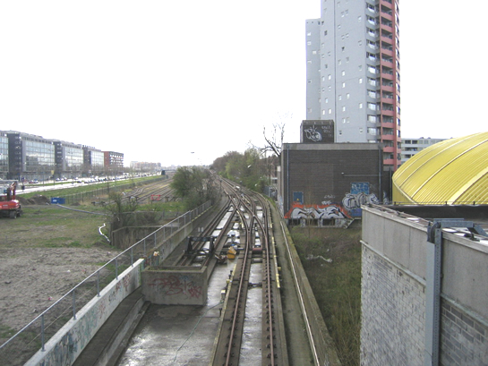

Bananenbrug, huidige situatie
- dinsdag 03 november 2009 22:00
- Geschreven door Rik
Dit najaar is het vijf jaar geleden dat het oudste stukje metrolijn van Nederland buiten dienst is gesteld. Één jaar geleden is het lijnstuk daadwerkelijk gesloopt. Het betreft de spoorverbinding tussen de voormalige metrowerkplaats Hilledijk en de hoofdbaan tussen Rijnhaven en Leuvehaven (later Wilhelminaplein).
Het metrospoor was enkelsporing uitgevoerd. Vanaf het emplacement Hilledijk (wat later nog voor trams is gebruikt, maar wat er nu verlaten bij staat) voerde het spoor over de Bananenbrug riching de hoofdbaan. Deze brug werd zo genoemd omdat er over het goederenspoor dat onder de brug doorliep, veel bananen werden vervoerd. Deze brug was nodig om de reeds genoemde goederenspoorlijn naar Katendrecht te passeren.
Na de brug, daalt het spoor in de richting van de tunnel onder de Nieuwe Maas. In het hellende vlak van de tunnel, enkele tientallen meters voor het huidige station Wilhelminaplein, was er een aansluiting tussen het emplacementsspoor en spoor één (richting Centraal Station) van de hoofdbaan. Direct na dit wissel lag een overloopwissel tussen spoor één en twee. Van het hele voormalige wisselcomplex Parallelweg is alleen het laatst genoemde wissel behouden.
De sloop van het spoor was nodig omdat er op de kop van zuid ruimte gecreëerd wordt voor de bouw van woon- en kantoortorens. Ook het naast de remise Hilledijk gelegen goederenemplacement wordt gesloopt. Op de plaats van het oude wisselcomplex Parallelweg, zijn inmiddels enkel woontorens verrezen. Nadat de remise Hilledijk niet meer door trams gebruikt zal worden (de trams gaan naar de remise Beverwaard -in aanbouw- langs de A15), zal ook deze gesloopt worden en zal ook hier nieuwbouw verreizen.
Hieronder enkele foto's om het geheel te illustreren:

Het oude wisselcomplex Paralellweg. Tussen de Bananenbrug en de hoofdbaan was een klein stukje dubbel spoor.

Op de plek waar vroeger het wisselcomplex lag, ligt nu de inrit van een parkeergarage.

De voormalige toegang tot de metrotunnel, is gedicht. De lichte betonnen muur op de voorgrond is gebouwd na de sloop van het spoor en heeft een waterkerende functie.

Op deze locatie lag voorheen metrospoor, tegenwoordig is het een braak stukje lang tussen het nieuwe wooncomplex 'Cité' en de metrobaan.

Nabij de remise zijn nog enkele restanten te zien van het oude viaduct. Geheel links is het talud te zien, waar het viaduct vroeger aansloot op het emplacement Hilledijk.

Het voormalige metrospoor is doorgezaagd en de derde rail is verwijderd. Het voorheen nog voor trams in gebruik zijnde emplacement, staat er verlaten bij.

Deze foto illustreert hoe het gebied achter de remise Hilledijk er tegenwoordig bij ligt.
Voor meer informatie, zie de volgende nieuwsitems:
Metrobaan Centraal Station-Zuidplein